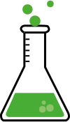

<header id="navbar">
    <style>
        #navbar {
    position: fixed;
    top: 0;
    width: 100%;
    z-index: 1000;
    /* Estilo inicial: Transparente o semi-transparente */
    background-color: transparent;
    transition: background-color 0.5s ease, padding 0.5s ease;
}

#navbar-logo {
    opacity: 0; /* Inicialmente oculto */
    transform: scale(0); /* O muy pequeño */
    transition: opacity 0.5s ease, transform 0.5s ease;
}

/* El logo GRANDE en el contenido */
#hero .logo-container {
    /* (Tus estilos actuales para el logo grande) */
}
/* Clase que se aplica al cuerpo (o a la navbar) al hacer scroll */
.scrolled #navbar {
    background-color: #388e3c; /* El color verde de tu banner */
    box-shadow: 0 2px 5px rgba(0, 0, 0, 0.2);
}

.scrolled #navbar-logo {
    opacity: 1; /* Mostrar */
    transform: scale(1); /* Tamaño normal/pequeño */
    /* Asegúrate de que el tamaño del logo pequeño sea igual al que quieres al final */
}
    </style>
    <a href="#" id="navbar-logo" class="logo-small">
        
    </a>
    <nav>
        </nav>
</header>

<main>
    <section id="hero">
        <div class="logo-container">
            
            <h1>KEME AGIDI</h1>
        </div>
        </section>
    </main>
    <script>
        // Referencias a los elementos
const navbar = document.getElementById('navbar');
// El umbral (en píxeles) para activar la transición.
// Aproximadamente el alto de tu sección verde grande.
const scrollThreshold = 200; // Ajusta este valor

// Función para manejar el evento de scroll
function handleScroll() {
    // window.scrollY es el valor que representa tu 'lógica' o 'patrón'
    if (window.scrollY >= scrollThreshold) {
        // Se ha superado el umbral: Se aplica la clase
        navbar.classList.add('scrolled');
    } else {
        // No se ha superado el umbral: Se quita la clase
        navbar.classList.remove('scrolled');
    }
}

// Escuchar el evento de scroll en la ventana
window.addEventListener('scroll', handleScroll);
    </script>
    <br><br><br><br><br><br><br><br><br><br><br><br><br><br><br><br><br><br><br><br><br><br><br><br><br><br><br><br><br><br><br><br><br><br><br><br><br><br><br><br><br><br><br><br><br><br><br><br><br><br><br><br><br><br><br><br><br><br><br><br><br><br><br><br><br><br><br><br><br><br><br><br><br><br><br><br><br><br><br><br><br><br><br><br><br><br><br><br><br><br><br><br><br><br><br><br><br><br><br><br>
    <br><br><br><br><br><br><br><br><br><br><br><br><br><br><br><br><br><br><br><br>